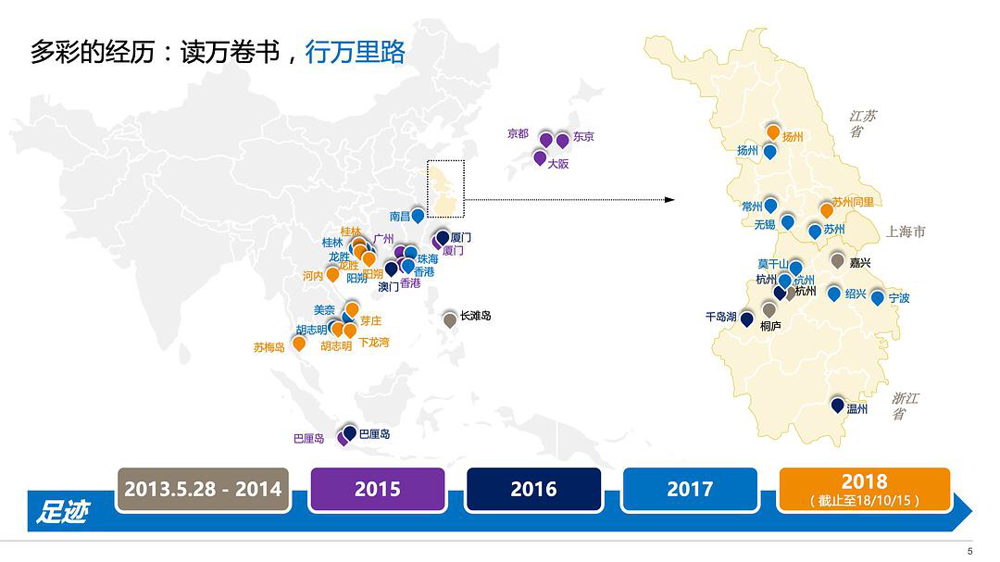
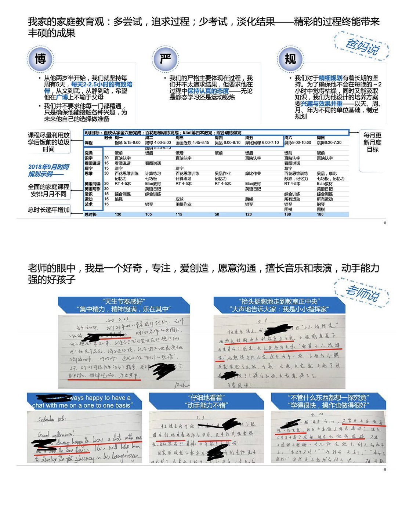

在学校时候，我们被老师教会各种咬文嚼字，什么concurrent还是parallel，cache还是buffer，lock还是latch，bandwidth还是throughout……工作起来才发现，基本混为一谈。因为各种工程师来自各种知识背景，各种系统了解程度，各种英语掌握程度，所以严格的技术交流很少见，逮到一个能交流的词就说了，哪还管什么严格不严格。渐渐的，咬文嚼字的技能就丧失了，自我要求也退化了……

斯图亚特9
2018-10-31
斯图亚特9
2018-10-31
我只想说，从小就懂得夸大、吹牛、自我包装、做ppt，长大了一定是创业开公司的好材料。 //@ettetsud:就想说，为啥这种帖子总是特别火，转点啥不好非要转这些有的没的（然额为了吐槽我也转了，悖论  //@fableberry: 蛤？//@裹er稼:就想说…不能接受在ppt里使用无意义的渐变色和3D效果！！！只要
//@fableberry: 蛤？//@裹er稼:就想说…不能接受在ppt里使用无意义的渐变色和3D效果！！！只要
@开八:
输在了起跑线上！！别人家孩子的简历 简历应该是为了就读国际学校准备的，父母都非常厉害，在高薪行业的头部国际公司做高管
简历应该是为了就读国际学校准备的，父母都非常厉害，在高薪行业的头部国际公司做高管
图片来自一位5岁小盆友的简历pdf。
图片来自一位5岁小盆友的简历pdf。
- 
- 